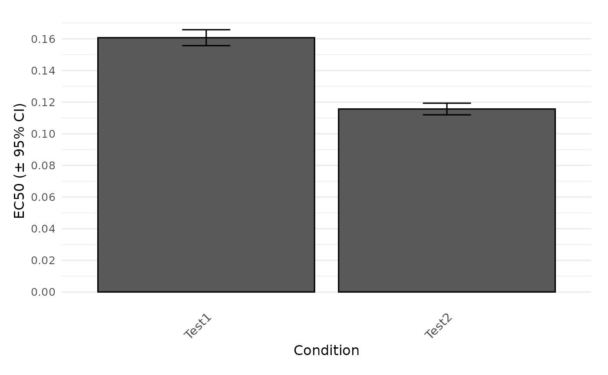

Compare calculated dose-response parameters between conditions.
Source:R/growth_plots.R
plot.dr_parameter.Rdplot.dr_parameter gathers parameters from the results of a dose-response analysis and compares a chosen parameter between each condition in a column plot. Error bars represent the 95% confidence interval (only shown for > 2 replicates).
Usage
# S3 method for class 'dr_parameter'
plot(
x,
param = c("EC50", "EC50.Estimate", "y.max", "y.min", "fc", "K", "n", "yEC50",
"drboot.meanEC50", "drboot.meanEC50y", "EC50.orig", "yEC50.orig"),
names = NULL,
exclude.nm = NULL,
basesize = 12,
reference.nm = NULL,
label.size = NULL,
plot = TRUE,
export = FALSE,
height = 7,
width = NULL,
out.dir = NULL,
out.nm = NULL,
...
)Arguments
- x
A
grofit,drFit,drTable, orflFitResobject obtained withgrowth.workflow,growth.drFit,fl.drFit, orfl.workflow.- param
(Character) The parameter used to compare different sample groups. Any name of a column containing numeric values in
gcTable(which is stored withingrofitorgcFitobjects) can be used as input. Useful options are: 'y.max', 'y.min', 'fc', 'K', or 'n' for fluorescence dose-response analyses withdr.type = 'model'in thecontrolargument, or 'EC50', 'yEC50', 'drboot.meanEC50', 'drboot.meanEC50y'.- names
(String or vector of strings) Define groups to combine into a single plot. Partial matches with sample/group names are accepted. If
NULL, all samples are considered. Note: Ensure to use unique substrings to extract groups of interest. If the name of one condition is included in its entirety within the name of other conditions, it cannot be extracted individually.- exclude.nm
(String or vector of strings) Define groups to exclude from the plot. Partial matches with sample/group names are accepted.
- basesize
(Numeric) Base font size.
- reference.nm
(Character) Name of the reference condition, to which parameter values are normalized. Partially matching strings are tolerated as long as they can uniquely identify the condition.
- label.size
(Numeric) Font size for sample labels below x-axis.
- plot
(Logical) Show the generated plot in the
Plotspane (TRUE) or not (FALSE). IfFALSE, a ggplot object is returned.- export
(Logical) Export the generated plot as PDF and PNG files (
TRUE) or not (FALSE).- height
(Numeric) Height of the exported image in inches.
- width
(Numeric) Width of the exported image in inches.
- out.dir
(Character) Name or path to a folder in which the exported files are stored. If
NULL, a "Plots" folder is created in the current working directory to store the files in.- out.nm
(Character) The name of the PDF and PNG files if
export = TRUE. IfNULL, a name will be automatically generated including the chosen parameter.- ...
Additional arguments. This has currently no effect and is only meant to fulfill the requirements of a generic function.
Value
A column plot comparing a selected parameter of a dose-response analysis between tested conditions.
Examples
# \donttest{
# Create random growth data set
rnd.data1 <- rdm.data(d = 35, mu = 0.8, A = 5, label = "Test1")
rnd.data2 <- rdm.data(d = 35, mu = 0.6, A = 4.5, label = "Test2")
rnd.data <- list()
rnd.data[["time"]] <- rbind(rnd.data1$time, rnd.data2$time)
rnd.data[["data"]] <- rbind(rnd.data1$data, rnd.data2$data)
# Run growth curve analysis workflow
gcFit <- growth.gcFit(time = rnd.data$time,
data = rnd.data$data,
parallelize = FALSE,
control = growth.control(fit.opt = "s",
suppress.messages = TRUE))
# Perform dose-response analysis
drFit <- growth.drFit(gcTable = gcFit$gcTable,
control = growth.control(dr.parameter = "mu.spline"))
#>
#> === EC 50 Estimation ==============================
#> ---------------------------------------------------
#> --> Checking data ...
#> --> Number of distinct tests found: 2
#> --> Valid datasets per test:
#> TestID Number
#> Test1 35
#> Test2 35
plot.dr_parameter(drFit, param = 'EC50')

# }